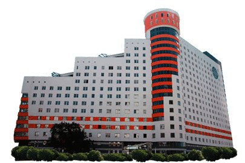
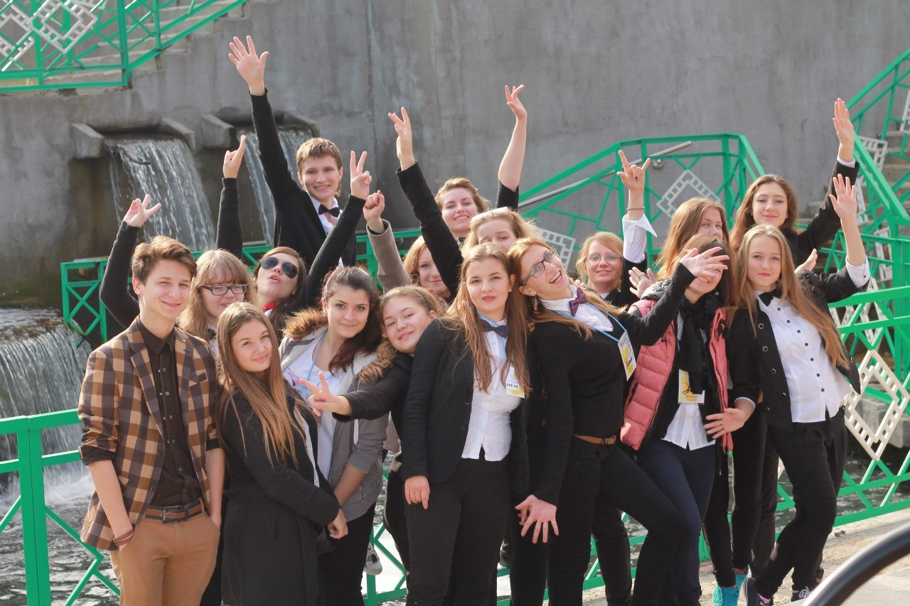
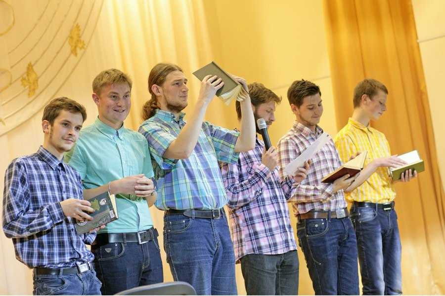

Date: Now 6, 2013
Самые свежие новости!
Добро пожаловать, или экономистам и журналистам вход разрешен!
Немаленькое прибавление в Студенческой деревне - 28 октября 2013 года ровно в 14.00 общежитие No4 Белорусского государственного университета (по ул. Чюрлениса, 7) , как пишут на сайте студгородка, распахнуло свои двери для студентов экономического факультета и Института журналистики. Поздравляем всех ребят - причем не только жителей четверки! В нашей десятке, в связи с переселением вышеназванных, должны были появиться свободные места. Так что кого-то с новосельем, а кого-то и со старосельем!
Анастасия Полтаржицкая
В 92 жизнь только начинается!
Гуманитарии тоже шутят
Хочется поблагодарить все команды за отличные костюмы, полюбившуюся музыкальную подборку, замечательную актерскую игру и просто за подаренное хорошее настроение!
Юлия ПАШКЕВИЧ
Нуждаетесь в помощи? Тогда мы идем к вам
В этом году продолжает свою активную деятельность факультатив взаимопомощи. Студентами второго курса Андреем Архипенко, Кириллом Вусиком и Кириллом Шпаком – для первокурсников организовываются занятия по математическому анализу, аналитической геометрии и линейной алгебре. Студентам курсом старше с дифференциальными уравнениями и теорией вероятности готовы помочь Евгений Кривошеев, Андрей Волков, Иван Подмазов, Михаил Калина и Дмитрий Воробьёв. Занятия проводятся преимущественно перед контрольными работами. Если требуется любая консультация – обращайтесь к ребятам.
Анастасия Полтаржицкая
В бой идут одни старосты
Поесть и себя показать
КВН. Эпизод за эпизодом.
Трус не играет в футбол!
Все, конечно же, знают, что факультет радиофизики считается сугубо мужским. Именно поэтому футбол никак не мог пройти мимо нас стороной.
Весной наши студенты организовали чемпионат по мини-футболу. Но уже в этом году он расширился и стал полноценным проектом на настоящем игровом поле с искусственной травой. Мероприятие прошло на базе СК «Атлант».
Проведение чемпионата обеспечили Павел Столяр, Артем Рынкевич, Миша Антоненко, Павел Горбанов. Спонсорами игр выступили компания EPAM и, собственно, профком БГУ.
Безоговорочную победу одержала команда «Deprimo». Борьба за второе место завязалась между командами «ФК им. Фёдоровича» и сборной факультета RFKT «Some-Star». Результат – 3:1 в пользу «Фёдоровичей».
Лучшими игроками чемпионата стали
Александр Маковчик, Владимир Горбунов, Никита Груца, Сергей Веселко, Артур Бандарик, Герман Рутковский, Михаил Антоненко, Владислав Анищенко.
В футбол радиофизики играли с большой охотой и желанием, искали одинаковую форму, тренировались, болели за свои команды. Главным призом стал кубок, все участники получили сладкие призы и медали.
Всего было проведено 10 игр между 5 командами. Были красные карточки, недовольства и забитые мячи. Но, в целом, всё прошло неплохо, да и погода выдалась удачная. Так что будем с радостью ждать следующего чемпионата.